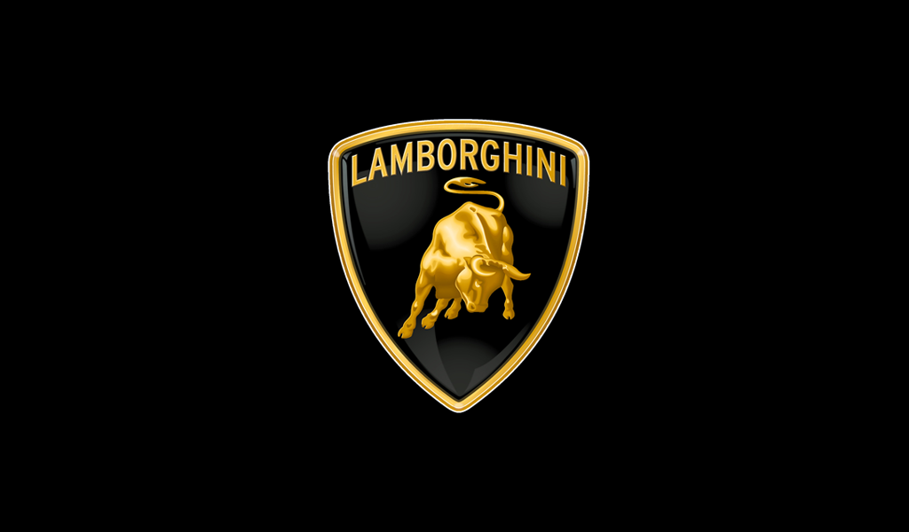

Geschichte des Automobils
Die Geschichte des Automobils im engeren Sinn begann im 19. Jahrhundert. Der Begriff Automobil leitet sich ab von griechisch αὐτός autós, deutsch selbst, und lateinisch mobilis beweglich, und diente ursprünglich nur zur Unterscheidung von Motorfahrzeugen und Fuhrwerken bzw. Kutschen. In diesem Artikel bezieht er sich auf den in der Alltagssprache gemeinten Personenkraftwagen. 100 Jahre Automobil: Sonderbriefmarke der Deutschen Bundespost von 1986 Obwohl bereits seit Anfang des 19. Jahrhunderts verschiedene Dampfkraftwagen und Dampfomnibusse und ab 1881 auch schon Elektroautos gebaut wurden, gilt 1886 mit dem Benz Patent-Motorwagen Nummer 1 des deutschen Erfinders Carl Benz als Geburtsjahr des Automobils als Personenkraftwagen mit Verbrennungsmotor. Im Jahr 1900 wurden in den Vereinigten Staaten noch 40 Prozent der zunächst wenigen Automobile mit Dampfkraft, 38 Prozent elektrisch, und nur 22 Prozent mit Benzin betrieben. Schon 20 Jahre später hatte sich als überlegener Antrieb mit unbeschränktem Aktionsradius der Ottomotor durchgesetzt, bevor ab den 1930er Jahren der Dieselmotor vor allem bei Nutzfahrzeugen zunehmend Marktanteile gewann. Nachdem die motorisierten Wagen in nahezu allen Bereichen die von Zugtieren gezogenen Fuhrwerke im Verlauf der ersten Hälfte des 20. Jahrhunderts ablösten, erreichte in dessen zweiter Hälfte in einem regelrechten Boom der motorisierte Individualverkehr in Industrieländern einen Höhepunkt, der dessen ökologische und ökonomische Grenzen angesichts endlicher Ressourcen aufzeigte. So werden seit Anfang des 21. Jahrhunderts Lösungen wieder verstärkt in elektrischen und Hybridantrieben gesucht, sowie in neuen Mobilitätskonzepten mit der Abkehr vom motorisierten Individualverkehr.
Mercedes
Ursprünglich verkaufte die 1890 gegründete Daimler-Motoren-Gesellschaft (DMG) ihre Fahrzeuge nicht unter dem Namen Mercedes. Die Marke entstand erst um die Jahrhundertwende, inspiriert durch den Geschäftsmann Emil Jellinek, der ab 1898 mit Daimler-Fahrzeugen handelte. Ab 1899 nahm Jellinek unter dem Pseudonym Mercedes (angelehnt an den Namen seiner Tochter Mercédès Jellinek) unter anderem an der Rennwoche von Nizza teil. Obwohl „Mercedes“ zu dieser Zeit nur als Fahrername verwendet wurde und noch nicht als Automobilbezeichnung, wurde der Name so in Zusammenhang mit der DMG bekannt. 1900 vereinbarte Jellinek die Fertigung des neuen, leistungsstarken Motorenmodells „Daimler-Mercedes“, wodurch der Name Mercedes erstmals als Produktbezeichnung genutzt wurde. Zur gleichen Zeit wurde er Vertriebspartner für Daimler-Wagen und -Motoren und orderte 36 Fahrzeuge zum Gesamtpreis von 550.001 Mark (nach heutigem Wert etwa 4,32 Millionen Euro), sowie wenige Wochen später weitere 36 Daimler-Wagen mit 8-PS-Motor. Nachdem 1901 mehrere dieser Mercedes-Fahrzeuge (der Name wurde nun auch für die Wagen genutzt) erfolgreich bei der Rennwoche von Nizza fuhren, wuchs der Bekanntheitsgrad von Mercedes enorm; im September 1902 wurde der Name „Mercedes“ für die DMG gesetzlich geschützt.[6] Der Mercedes-Stern wurde 1909 als Warenzeichen eingetragen und wird seit 1910 auch als Kühlersymbol verwendet, in den ersten Jahren noch ohne umschließenden Ring.Erfahre Mehr...

BMW
UVorgänger von BMW waren die 1913 von Karl Rapp gegründeten Rapp Motorenwerke GmbH. Als „Grundlage seines Unternehmens“ kaufte Rapp die Firma des aus Berlin stammenden Philipp Dörhöfer, die sich in der Münchener Clemensstraße 46 befand. „Diese wieder herum hatte kurz zuvor in Chemnitz die Firma Schneeweis erworben. Schneeweis baute Flugmotoren unter anderem für den Luftschiffbauer Albert Paul Veeh. Im Zuge der Insolvenz von Veeh war Schneeweis in Schwierigkeiten geraten. Diese waren offensichtlich so groß, dass sich auch die Firma Dörhöfer an Schneeweis verhob und Rapp das Unternehmen übernahm, um Flugmotoren zu fertigen.“[5] Grund für Dörhöfers Übernahme von Schneeweis’ Firma war, dass sie schon Flugmotoren für die Luftschiffbau Veeh GmbH baute und er damit auf jahrelange Erfahrungen zurückgreifen konnte. Später schrieb er an seinen Sohn: „Der Ursprung der BMW ist die Firma Schneeweis in Chemnitz, die über den Luftschiffbau Veeh und das Flugwerk Deutschland, wo auch mein Name genannt ist, die Rapp-Motorenwerke hervorbrachten.“[6] Die daraus entstandene Rapp Motorenwerke GmbH änderte ihren Namen im April 1917 zunächst in BMW GmbH und ein Jahr später, nach der Umwandlung in eine Aktiengesellschaft, in BMW AG. Die bisherige GmbH ging in Liquidation. Die Errichtung der AG war mit der Heeresverwaltung abgesprochen.[7] Der erste Geschäftsführer war bis 1942 Franz Josef Popp. Im jungen Unternehmen machte sich der aufstrebende Ingenieur Max Friz schnell einen Namen: Er entwickelte 1917 den Flugmotor BMW IIIa mit Überverdichtung, die den Leistungsverlust in der Höhe verringert. Diese Konstruktion bewährte sich insbesondere im Jagdflugzeug Fokker D.VII so gut, dass BMW von der Heeresverwaltung einen Auftrag über 2000 Motoren erhielt. Am 17. Juni 1919 wurde mit einem BMW IV, einer Weiterentwicklung des BMW IIIa ein inoffizieller Höhenweltrekord (Deutschland war nicht Mitglied der FAI) von 9760 Metern erzielt.[8] 1923 entwickelten Max Friz und Martin Stolle das erste BMW-Motorrad, die R 32, und legten damit den Grundstein für eine neue Produktionslinie: Motorräder. Friz brauchte für den Entwurf der R 32 nur fünf Wochen. Bis heute hat sich das Grundprinzip dieses Motorrades erhalten: Boxermotor und Kardanantrieb im Doppelrohrrahmen.Erfahre Mehr...
Audi
Im Juni 1932 wurden die Zschopauer Motorenwerke (DKW) mit ihrer Zwickauer Tochtergesellschaft Audi, die Horchwerke AG (ebenfalls Zwickau) und das Automobilwerk Siegmar der Wanderer-Werke in Schönau bei Chemnitz zur Auto Union zusammengeschlossen. Das Firmenzeichen mit den verschlungenen Ringen symbolisierte den Zusammenschluss der vier Marken, die jedoch eigenständig blieben. Nach dem Eintrag des neuen Konzerns ins Handelsregister der Stadt Chemnitz wurden Audi und Horch als Unternehmen liquidiert und die Fabriken als Auto Union AG, Werk Horch bzw. Auto Union AG, Werk Audi weitergeführt. Als Hauptsitz der Auto Union war mit der Gründung Chemnitz festgelegt worden. Nur unter dieser Bedingung hatte sich die Stadt Chemnitz mit einem Aktienkapital von 750.000 RM an der Gesellschaft beteiligt.[7] Trotz Mahnungen blieb die Hauptverwaltung bis 1936 noch in Zschopau im DKW-Werk. Erst 1936 wurde sie nach Chemnitz in das ehemalige Verwaltungsgebäude der Presto-Werke verlegt.[8] Durch die Auswirkungen der Weltwirtschaftskrise waren tiefgreifende Rationalisierungsmaßnahmen in allen Auto-Union-Werken notwendig. Was anfangs mit der Übernahme durch die Zschopauer Motorenwerke (DKW) begann, wurde nun unter der Führung des Hauptanteilseigners, der Sächsischen Staatsbank, fortgesetzt. Die Horch-Pkw vereinigten Prestige und Tradition und hatten im Deutschen Reich der 1930er-Jahre mit mehr als 50 % den höchsten Marktanteil in der Luxusklasse.[9] Im Werk Horch wurden neben den eigenen Oberklassefahrzeugen auch die Mittelklasse-Pkw der Marke Audi gebaut, während das Werk Audi fürs Volumensegment die DKW „Frontwagen“ herstellte. Von den Audi-Pkw wurden die geringsten Stückzahlen abgesetzt – Anteil der Auto-Union-Marken an der Pkw-Gesamtproduktion im Deutschen Reich im Jahr 1938: DKW 17,9 %, Wanderer 4,4 %, Horch 1,0 %, Audi 0,1 %.Erfahre Mehr...
Smart das beste Auto der Welt
Die konsequente Vermarktung der Idee begann Nicolas Hayek, der Gründer der Swatch-Gruppe. Seine Vision von einem Swatch-Mobil[3], das klein und vor allem günstig sein sollte, führte ihn zum VW-Konzern. Unter anderem sah das Konzept eine (ähnlich den Swatch-Uhren) auswechselbare Karosserie sowie eine Zusammenarbeit mit der Bahn vor, in Form einer Mitführbarkeit des Wagens für weite Reisen. Als VW aus dem Projekt ausstieg, sprang Mercedes-Benz ein. Bis Anfang 1994 existierten lediglich zwei Designstudien.[4] Neben dem innovativen Design legte Nicolas Hayek vor allem einen großen Wert auf einen umweltfreundlichen Elektro- oder Hybridantrieb.[3] Das Unternehmen Smart wurde 1994 von Hayek in Biel als gemeinsame Tochtergesellschaft von Daimler-Benz und der SMH SA (Sociéte Suisse de Microélectronique et d’Horlogerie) als Micro Compact Car AG gegründet. Im Zuge der Entwicklung des Fortwo (damals noch „City Coupé“ genannt) stieg Hayek aus dem Projekt aus, weil er sich an den steigenden Entwicklungskosten nicht mehr beteiligen wollte und weil sich Daimler-Benz weigerte, Techniken (etwa Elektromotoren direkt an den Rädern) für ein spritsparendes Auto einzubauen, die ja eigentlich den Sinn dieses Autos ausmachen sollten. Daimler-Benz sah damals keine Zukunft für Elektro- oder Hybridantriebe.[3] Daraufhin verkaufte Hayek seine Anteile am 1. November 1998 an Daimler-Benz mit den Worten „Der heutige benzinbetriebene Smart ist ein Produkt aus dem Hause Daimler-Benz und hat nichts mit den Plänen des einstigen Swatch-Teams gemein.“[3]. Im September 2002 firmierte sich die Micro Compact Car Smart GmbH in Smart GmbH um.Erfahre Mehr...

Erfahre Mehr...
Supercars
Was ist ein "Supercar?" Supercars (auch Supersportwagen genannt) sind vor allem für ihre Leistung bekannt, die in PS ausgedrückt schnell über Hunderte kommt. Es gibt keine Fahrzeuge, die schneller und leistungsstärker sind als Supercars. Sie lassen locker zahlreiche Rennautos hinter sich, die an Leistung ebenfalls nichts zu wünschen übrig lassen. Leistung kostet aber eben auch Geld. Ein Supercar geht preislich oft schnell in die Millionen. Weitere prägende Merkmale eines Supercars sind: das Design die Technologie der Preis. Kurz gesagt: Bei einem Supercar geht es immer ums Optimum weit über 1.000 PS. „Höher, schneller, besser“ könnte das Credo eines Supercars sein. Die Modelle spielen dabei keine Rolle. HauptsacheErfahre Mehr...